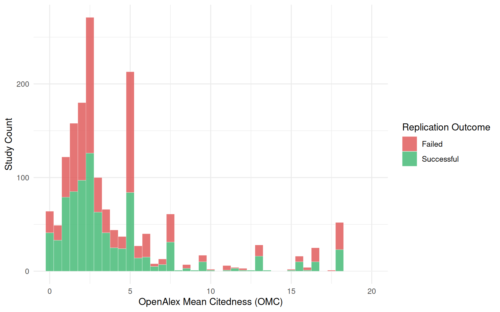
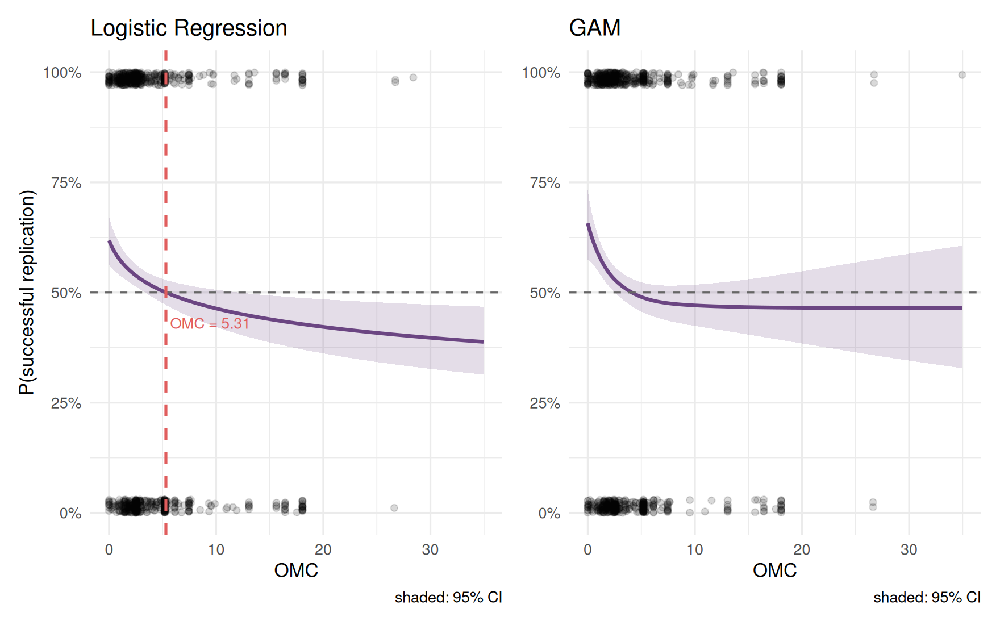

The distribution of OMC values for the FLoRA replications with binary
outcomes is shown below (studies with OMC > 35 are
excluded).

Absolute count of replication outcomes by OMC in the FLoRA database. Studies with OMC > 35 are excluded.
N = 1634 replications with both an outcome and an OMC value (860 successful, 774 failed). Logistic regression with log-transformed OMC gave a statistically significant overall model fit, \(\chi^2\)(1) = 12.55, p < .001. The Box–Tidwell test of linearity-in-log-odds was satisfied after log-transformation.
Model performance is modest: McFadden’s \(R^2\) = 0.006 (logistic regression) and 0.007 (GAM); AUC = 0.55 and 0.55 respectively. The OMC at which P(success) = 0.50 (logistic model) is 5.31.

Predicted probability of successful replication as a function of OMC. Left: logistic regression with log-transformed OMC. Right: GAM. Shaded bands represent 95% confidence intervals.
Role of scientific discipline. A multilevel logistic regression with a random intercept for discipline yields ICC = 0.064, meaning 6.4% of the variance in replication outcomes lies between disciplines. After accounting for that clustering, log-OMC retains a fixed effect of \(\hat\beta\) = -0.33 (p < .001).
Across model specifications, higher OMC is weakly negatively associated with replication success. The effect is small in magnitude and the explanatory power is too limited for journal-level citation metrics to serve as a meaningful heuristic for judging the replicability of individual studies.